<!DOCTYPE html>
<html>
<head>
  <meta http-equiv="Content-Type" content="text/html; charset=utf-8">
  <meta name="viewport" content="initial-scale=1, maximum-scale=1, user-scalable=no">
  <script src="src/clock.js"></script>
  <title></title>
  <style>
    html, body {
      padding: 0;
      margin: 0;
      height: 100%;
      overflow: hidden;
    }
    html {
      background: url(noisy_grid_dark.png);
      -webkit-box-shadow: inset 0px 0px 50px 0px rgba(0,0,0,0.75);
      -moz-box-shadow: inset 0px 0px 50px 0px rgba(0,0,0,0.75);
      box-shadow: inset 0px 0px 50px 0px rgba(0,0,0,0.75);
    }
    .container {
      height: 400px;
      width: 400px;
      float: left;
    }
    /* Required to make image fluid in IE */
    img:not(.png) {
      height: 100%;
      width: 100%;
    }
    .container-small {
      height: 100px;
      width: 100px;
      float: left;
    }    
  </style>
</head>
<body>
<!--   <div class="outter">
    <div class="container">
      <object type="image/svg+xml" data="src/clock.svg"></object>
    </div>
    <div class="container-small">
      <object type="image/svg+xml" data="src/clock.svg"></object>
    </div>
    <div class="container-small">
      
    </div>
  </div> -->

  <div id="clock" style="width: 300px; height: 300px; float:left"></div>
  <script>
    clock = new Clock({
      el: "clock"/*,
      skin: "./src/Swiss_railway_clock.svg"*/
    });
  </script>
  
  <div id="swissClock" style="width: 300px; height: 300px; float:left"></div>
  <script>
    swissClock = new Clock({
      el: "swissClock",
      skin: "./src/Swiss_railway_clock.svg"
    });
  </script>
  
<!--   <div id="quartzClock" style="width: 300px; height: 300px"></div>
  <script>
    swissClock = new Clock({
      el: "quartzClock",
      skin: "./src/Qtz_watch.svg"
    });
  </script> -->
</body>
</html>
